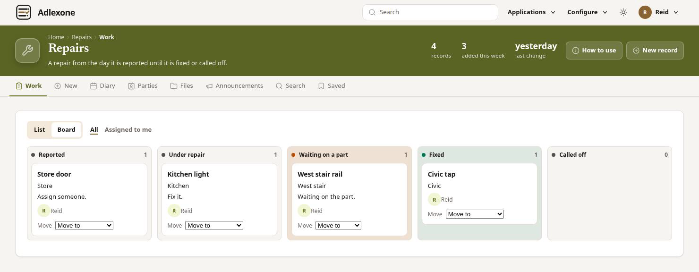
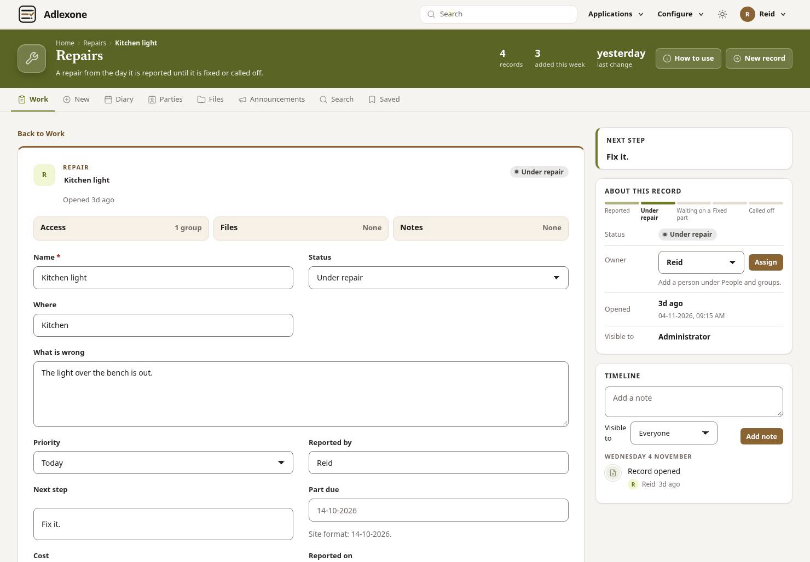
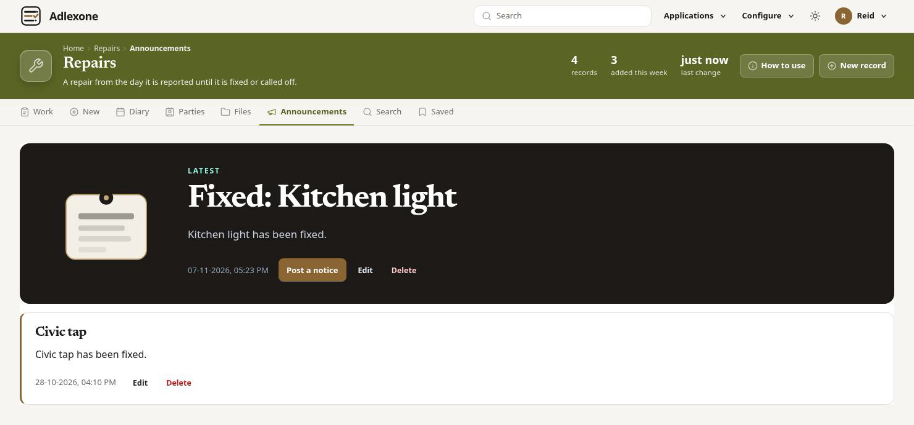

Build an application for a line of work.
Adlexone is the software you use to build it. You choose the fields on each record, the statuses that record moves through, and the rules. A person opens a record and moves the status. The application writes the date, the log, the notice, and the email. The timeline, the files, and the notes stay on the record.

The screen a person uses
The person doing the work opens a record, sees where it stands, and moves the status.
-
The board
The board is the work, with a column for each status.
-
The fields
Open a record. The fields are the ones set for that work. On Kitchen light they are the place, what is wrong, the priority, and who reported it. The owner is the person who has the record.
-
The timeline
The timeline is the log of what has happened. Files sit on the record. Next step says what is waiting, such as fix it.
-
The status
The person moves the status and saves. They do not type the date, the log, or the notice. The rule does that.

What you set
An application is one line of work. You decide the fields, the statuses, and the rules. Blank starts with no fields.
-
Fields
Text, a note, a menu, a checkbox, a date, a time, a date and time, an email, a number, a link, a built link, a password, a hidden value, or a person. A menu can have a child menu. Status is one of the menus, with the words used for that work.
-
Statuses
Where the work stands, and the ways it can finish. Repairs uses Reported, Under repair, Waiting on a part, Fixed, and Called off.
-
On every record
The timeline, the files, the notes, the dates, and Next step. The record has an owner. People belong to groups, and a note can be limited to a group.
-
Rules
A rule runs when a record is created, updated, given a note, or given a file, and a field matches. It can stamp a date, write the log, post a notice, send an email, set a field, or set the owner. The email can go to the owner, the creator, a person, a group, or an address.
One example
Repairs is one application: a repair from the day it is reported until it is fixed or called off. A request is the same kind of record: what someone asked, the thread, and the files. An article is the answer, moving from draft to published. A help desk, a knowledge base, and other lines of work are applications of the same shape.
Repairs in use
Kitchen light is under repair. You mark it fixed. The application writes the date, the log, the notice, and the email.
Repairs is the board. Kitchen light is under repair.
Open Kitchen light. Status is Under repair, and the next step is to fix it. The timeline says the record was opened.
Move Status to Fixed and save. The application stamps Fixed on, writes the log, and clears Next step.
A notice is posted that Kitchen light has been fixed. The same words are the email.
